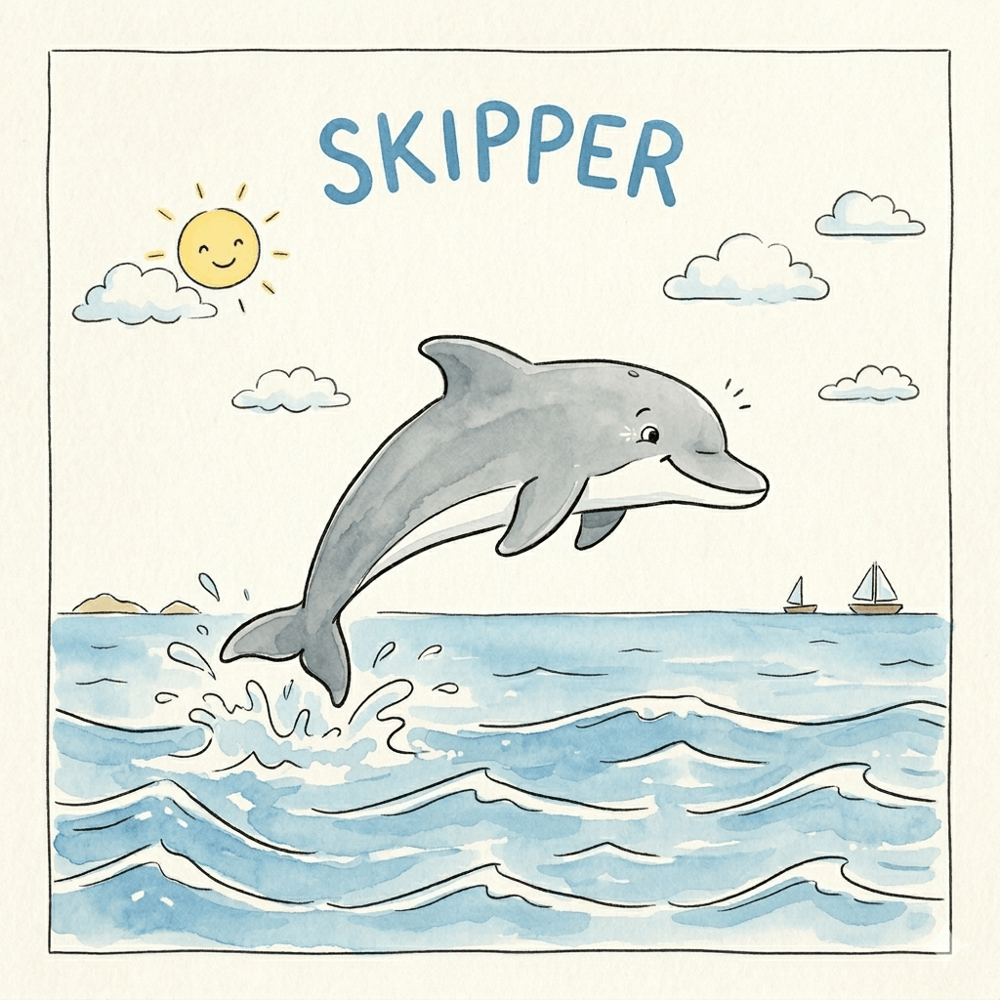

Enable and disable tests directly from a Google Spreadsheet — no code changes required.
Skipper is an open-source library that lets you control which tests run using a shared Google Spreadsheet. Mark a test as disabled in the sheet and Skipper skips it automatically — no pull requests, no deploys, no friction. Perfect for flaky-test management, feature flags in testing, and cross-team coordination.
Situations where teams reach for Skipper every day.
Your E2E suite runs overnight. The next morning, three tests are red — not because of a bug, but because the payment provider had a blip and the SSO endpoint was briefly unreachable. The build is blocked, the team is distracted, and fixing it means either commenting out tests and committing or waiting for the environment to recover. With Skipper, you open the sheet, disable those three tests, and the pipeline is green in under a minute. No commit, no review, no noise.
Why E2E tests are the perfect fit
An E2E test can fail because a third-party service is down, DNS is slow, or a certificate expired. It's not a bug in your code — but it still breaks the pipeline. Skipper lets you turn it off while the environment recovers.
If a test covers payment, email, and SSO, all it takes is one of those being in maintenance to make it fail. Being able to surgically disable that single test from the sheet — without touching the code — is far cleaner than a blanket skip.
E2E tests have more moving parts, more variables, more timing sensitivity. A test that "usually passes" but occasionally fails by a few milliseconds is a classic flaky E2E. Managing them one by one from the sheet is far more sustainable than letting .skip pile up in the codebase.
Because the control is in a Google Sheet, a QA engineer, PM, or tech lead can see at a glance what's enabled and what's not — without opening the repo. For E2E tests that often cover business-critical flows, that transparency matters.
A test starts failing on CI every now and then with no obvious cause. Instead of commenting it out and pushing a commit, you disable it from the sheet in 10 seconds and re-enable it once it's fixed — without pulling anyone else into it.
You've already written tests for a feature that hasn't shipped yet. You keep them in the codebase but disable them in the sheet until the feature goes live — no hardcoded skips cluttering the repo.
The backend team is refactoring an API. The backend lead disables the affected integration tests directly from the sheet, without waiting for QA to open a PR or anyone to touch test files.
Some tests only make sense on staging, not on CI — or the other way around. You keep one sheet per environment and manage exclusions there, with no conditional logic bleeding into the test code.
You're trying out a new testing approach and want to temporarily bench an entire category of tests. You do it from the sheet, run your experiment, and restore everything — without leaving any trace in the project.
Use Skipper with your language and test framework of choice.
Core library for JavaScript and TypeScript projects. Monorepo with dedicated packages for each test runner. Skipper uses Skipper itself to manage its own test suite — see the live spreadsheet.
Supported frameworks
Skipper for PHP projects, with support for the most popular testing frameworks in the ecosystem.
Supported frameworks
Skipper for Go projects, with adapters for the standard library and the most popular testing frameworks.
Supported frameworks
Skipper for .NET projects, with adapters for the most popular testing frameworks in the ecosystem.
Supported frameworks
Skipper for Python projects, with adapters for the most popular testing frameworks in the ecosystem.
Supported frameworks
Skipper for Java projects, with adapters for the most popular testing frameworks in the ecosystem.
Supported frameworks
Skipper expects a sheet with at least three columns: testId,
disabledUntil, and notes. Each row represents
one test. The testId is a unique identifier built from the
test's file path, describe block, and test name — Skipper generates it
automatically. The disabledUntil column accepts a date in
YYYY-MM-DD format. The notes column is free text and is useful
for leaving context about why a test was disabled.
Multiple sheets are supported within the same spreadsheet, which makes it easy to maintain separate configurations per environment — for example one sheet for CI and one for staging.
disabledUntil instead of an enabled flag?
A boolean enabled column works, but it has a subtle
problem: a disabled test stays disabled until someone actively goes
back and flips it. In practice, tests get forgotten.
disabledUntil forces you to set an expiry when you disable
a test. Once that date passes, Skipper automatically treats the test as
enabled again — no manual action needed. This keeps the spreadsheet tidy
and prevents a growing list of permanently-skipped tests that nobody
remembers to revisit. If you genuinely need to disable something
indefinitely, set the date far in the future — it's an explicit choice
rather than the path of least resistance.
Whoever you decide. Google Sheets handles access control natively: you can share the spreadsheet with specific people, restrict it to your organisation's domain, or keep it completely private. Every change is also tracked in the sheet's revision history, giving you a built-in audit trail of who updated a test and when — no extra tooling required.
Yes. Every repository in the get-skipper organization manages its test suite using Skipper. They all share a single public spreadsheet, each on its own dedicated sheet — so you can see the live state of every project's tests in one place:
View the get-skipper test spreadsheet →